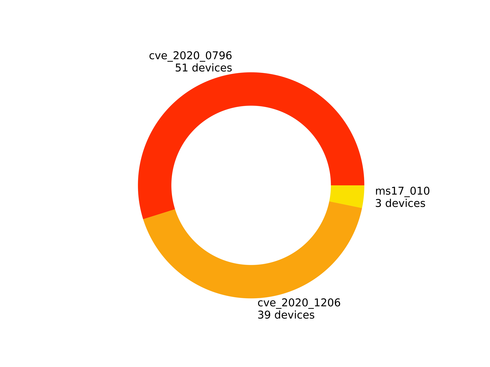

資安弱點檢測報告
Vulnerability Assessment Report
中華民國 109 年 11 月 3 日
- SMB檢測項目:
1. CVE 2020-1206漏洞檢測
2. CVE 2020-0796漏洞檢測
3. MS 08-067漏洞檢測
4. MS 17-010漏洞檢測
5. 風險帳號
6. 風險資料夾資訊
- SMB低安全性概況:

- SMB系統漏洞檢測概況:

- SMB資料共享風險概況:

詳細資訊
SMB系統漏洞檢測詳細資訊
| 漏洞名稱 |
cve_2020_0796 |
| 弱點敘述 |
該漏洞遠讓遠端攻擊者可對目標系統之SMBv3服務發送特製請求或架設惡意的SMBv3伺服器誘騙受害者進行連線，導致遠端執行任意程式碼 |
| 建議措施 |
目前微軟官方已針對此弱點釋出更新程式，請至下列連結進行更新：https://portal.msrc.microsoft.com/en-US/security-guidance/advisory/CVE-2020-0796 |
| 風險IP |
192.168.3.9
192.168.3.14
192.168.3.245
192.168.3.21
192.168.1.173
192.168.3.181
192.168.3.58
192.168.3.78
192.168.3.170
192.168.3.2
192.168.3.156
192.168.3.24
192.168.3.143
192.168.3.8
192.168.3.120
192.168.3.185
192.168.3.125
192.168.3.204
192.168.3.28
192.168.3.33
192.168.3.123
192.168.3.10
192.168.3.126
192.168.3.121
192.168.3.220
192.168.3.180
192.168.3.179
192.168.3.5
192.168.3.182
192.168.3.80
192.168.3.131
192.168.3.135
192.168.3.172
192.168.3.59
192.168.3.169
192.168.3.210
192.168.3.230
192.168.3.124
192.168.3.118
192.168.3.203
192.168.3.122
192.168.3.212
192.168.3.148
192.168.3.129
192.168.3.165
192.168.3.127
192.168.3.20
192.168.3.211
192.168.3.128
192.168.3.142
192.168.3.18
|
| 漏洞名稱 |
cve_2020_1206 |
| 弱點敘述 |
該漏洞產生的原因是SMB的解壓縮函數Srv2DecompressData在處理發送給目標SMBv3服務器以偽造的息請求時，所產生問題，攻擊者可以讀取未初始化的kernel內存，還可以對壓縮函數進行修改。 |
| 建議措施 |
目前微軟官方已針對此弱點釋出更新程式，請至下列連結進行更新：https://portal.msrc.microsoft.com/en-US/security-guidance/advisory/CVE-2020-1206 |
| 風險IP |
192.168.3.21
192.168.1.173
192.168.3.181
192.168.3.58
192.168.3.78
192.168.3.156
192.168.3.24
192.168.3.143
192.168.3.120
192.168.3.185
192.168.3.125
192.168.3.123
192.168.3.126
192.168.3.121
192.168.3.220
192.168.3.180
192.168.3.179
192.168.3.182
192.168.3.80
192.168.3.135
192.168.3.172
192.168.3.59
192.168.3.169
192.168.3.210
192.168.3.230
192.168.3.124
192.168.3.118
192.168.3.203
192.168.3.122
192.168.3.212
192.168.3.148
192.168.3.129
192.168.3.165
192.168.3.127
192.168.3.20
192.168.3.211
192.168.3.128
192.168.3.142
192.168.3.18
|
| 漏洞名稱 |
ms17_010 |
| 弱點敘述 |
Microsoft Server Message Block 1.0 (SMBv1) 處理特定要求的方式中存在資訊洩漏弱點。攻擊者可能會蓄意製作封包，藉此導致伺服器資訊洩漏，以及執行任意程式。例如：WanaCrypt的勒索病毒，主要透過此弱點將受感染的電腦,大量檔案加密，並且要求高價比特幣贖金來贖回資料。 |
| 建議措施 |
關閉SMB1服務，詳細操作資訊，請到以下網址，https://walker-a.com/archives/4261，Step2開始將指引您如何關閉SMB1 |
| 風險IP |
192.168.3.165
192.168.3.20
192.168.3.18
|